Miami and Fort Lauderdale
Twelve individual Town views. Approved Miami and South Beach geometry retained; ten new towns use the shared locked engine.
Miami (South Beach)
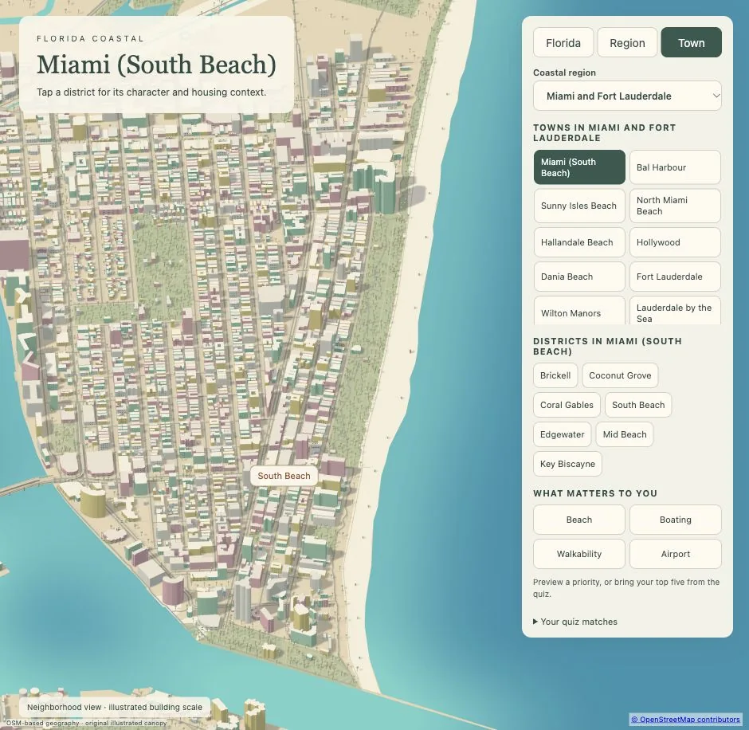
Open interactive Town view · Phone preview
Bal Harbour
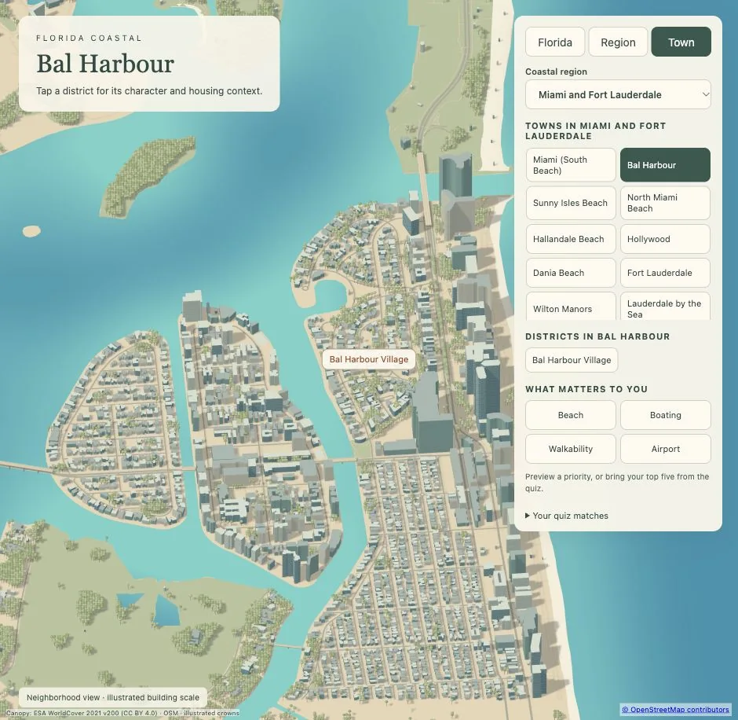
Open interactive Town view · Phone preview · OSM overlay
Sunny Isles Beach
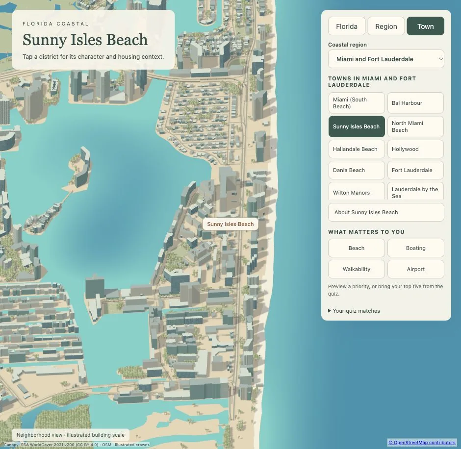
Open interactive Town view · Phone preview · OSM overlay
North Miami Beach
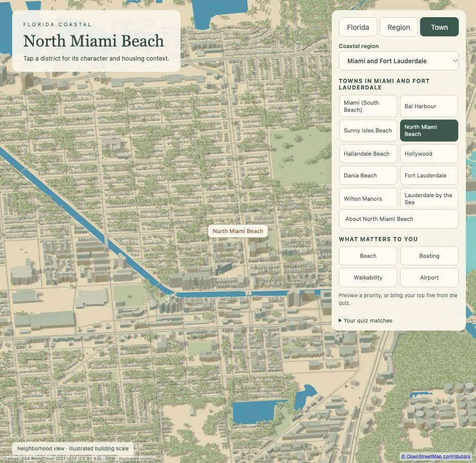
Open interactive Town view · Phone preview · OSM overlay
Hallandale Beach
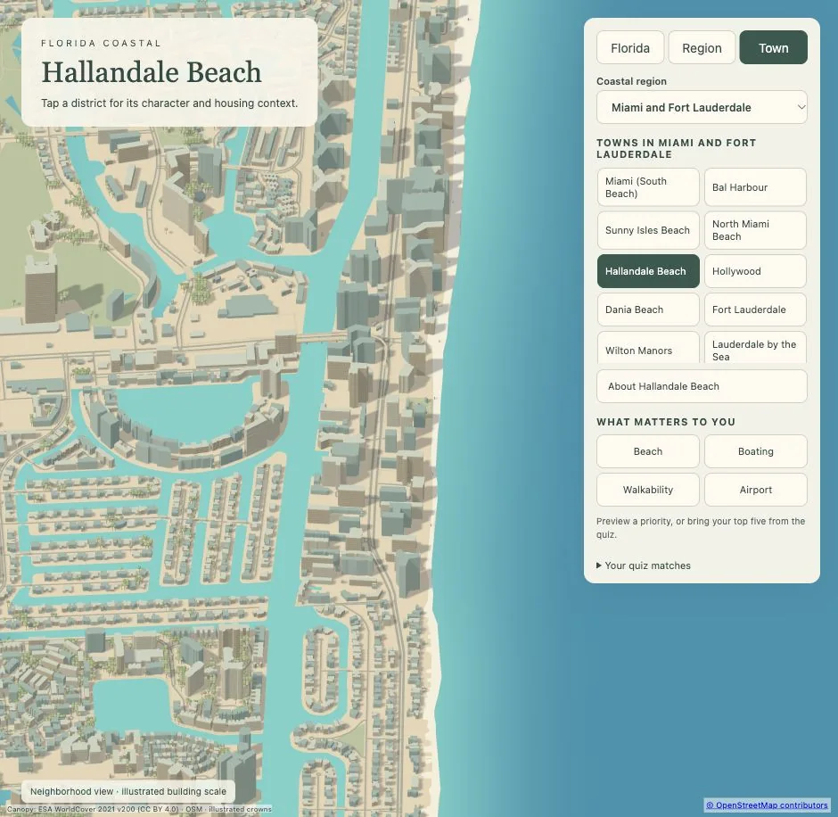
Open interactive Town view · Phone preview · OSM overlay
Hollywood
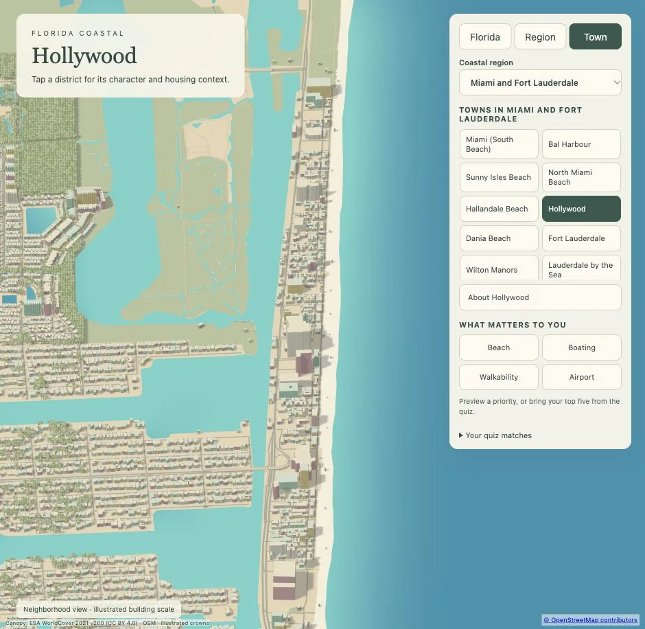
Open interactive Town view · Phone preview · OSM overlay
Dania Beach
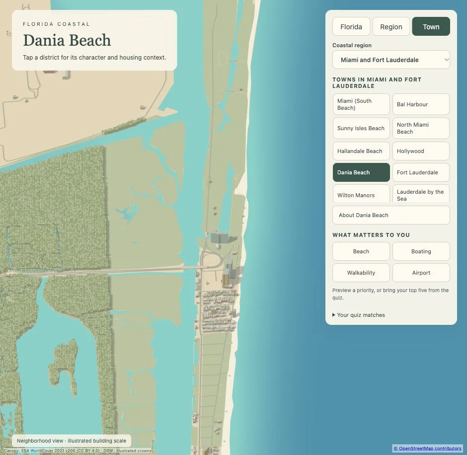
Open interactive Town view · Phone preview · OSM overlay
Fort Lauderdale
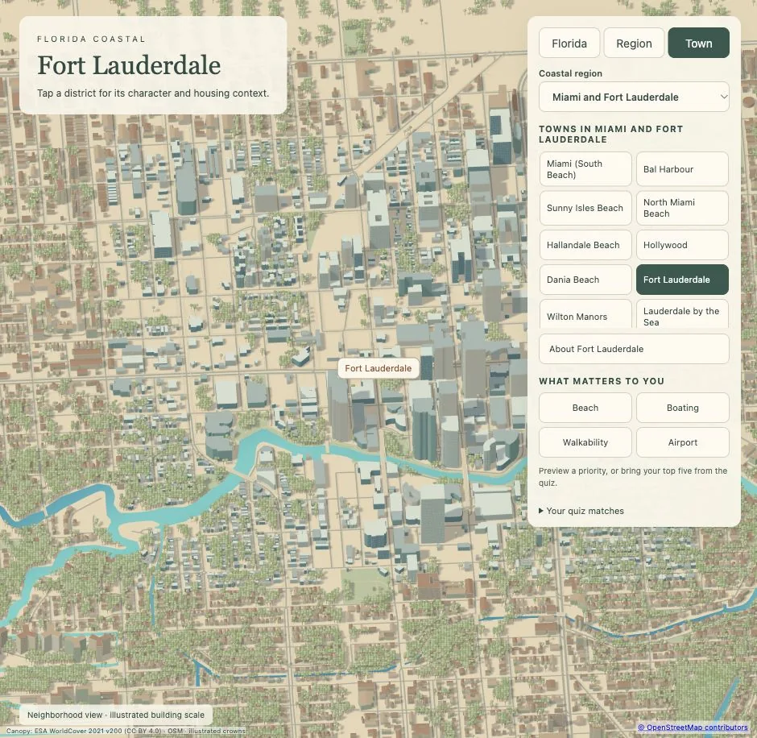
Open interactive Town view · Phone preview · OSM overlay
Wilton Manors
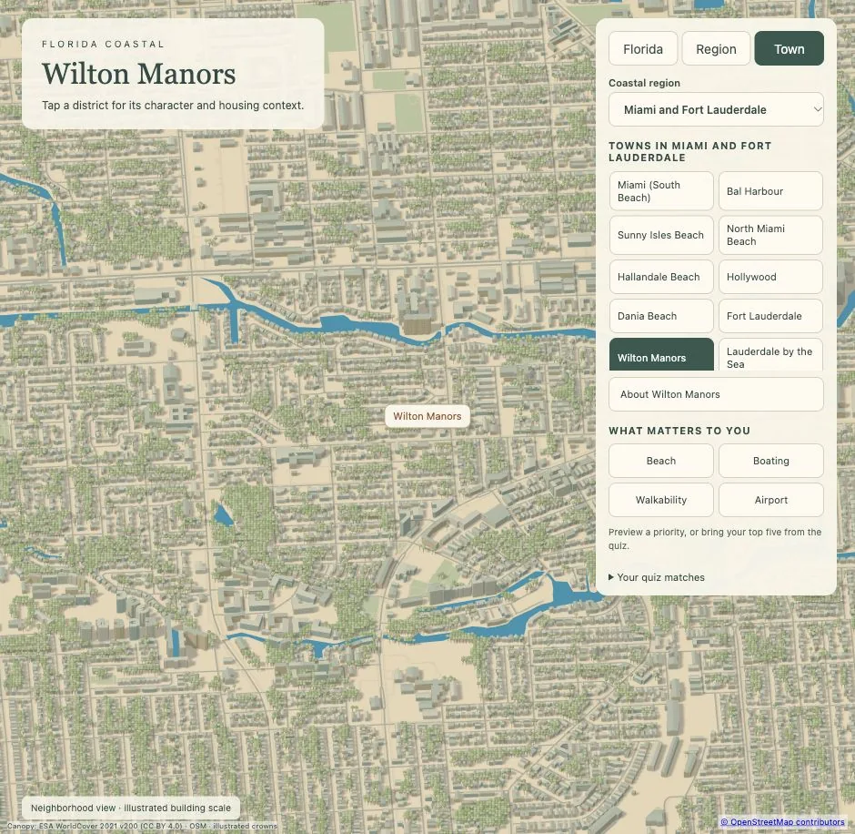
Open interactive Town view · Phone preview · OSM overlay
Lauderdale by the Sea
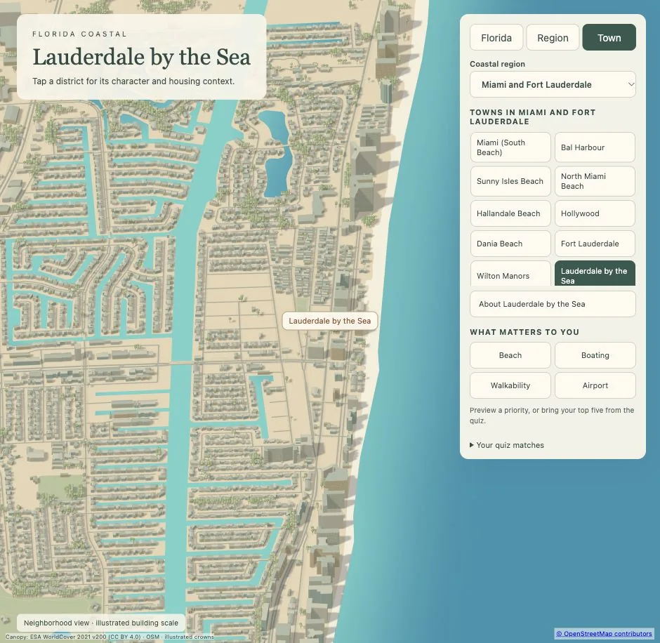
Open interactive Town view · Phone preview · OSM overlay
Lighthouse Point
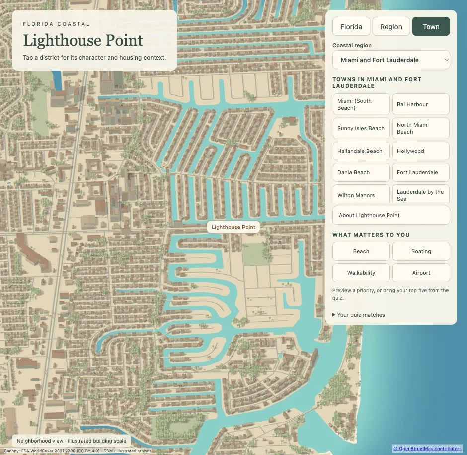
Open interactive Town view · Phone preview · OSM overlay
Miami
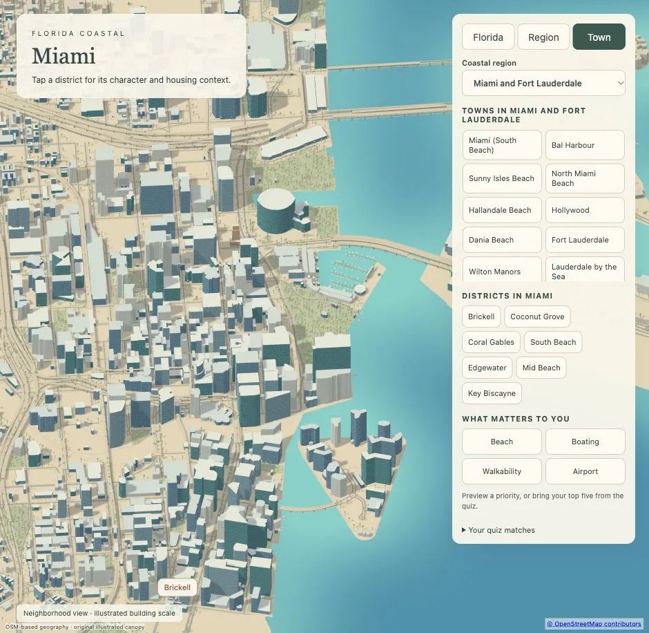
Open interactive Town view · Phone preview
Source alignment measures fidelity to OSM inputs, not surveyed ground truth. © OpenStreetMap contributors, ODbL; canopy: ESA WorldCover 2021, CC BY 4.0. Phone checks use a 390 px viewport; physical-phone timing is unverified.